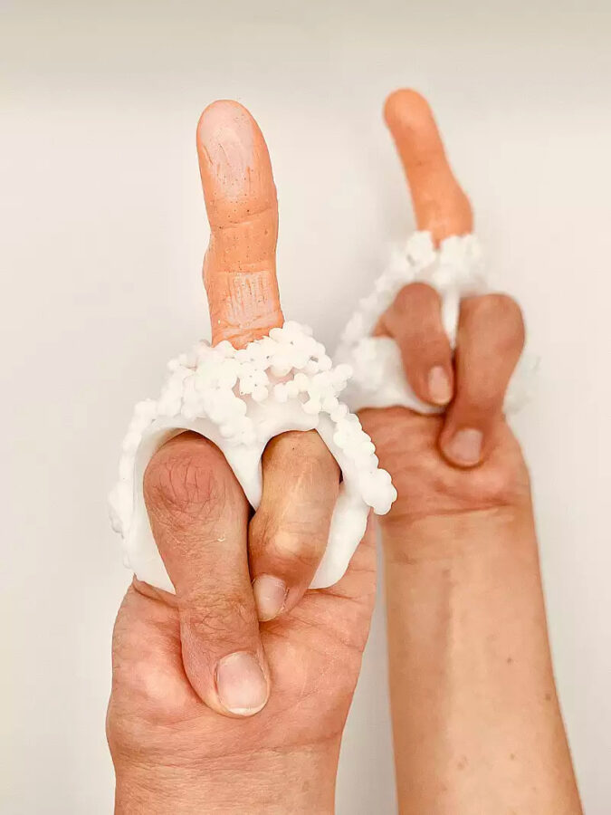

Augmenting the Senses in Art and Medicine
This panel discussion explores the tensions between sensory substitution and sensory augmentation, and the traditional hierarchy of the senses. Looking at different technologies meant to replace or enhance our senses, e.g., insulin pumps or bionic breast implants engineered to recreate somatosensory function, we are interested in asking: what idea of the senses underlies these technologies, and how do they modulate our being in touch with the world? How do they manage our attention differently? What drives the research on the restoration of sensory experience in those who have experienced limb loss?
The panel features experts from the arts and the sciences: Laura Forlano (Professor, Art + Design, Communication Studies, Northeastern University) explores the aesthetics and politics at the intersection between design and emerging technologies; Summer E. Hanson (MD, PhD, FACS, UChicago Medicine) specializes in plastic and reconstructive surgery and is part of the Bionic Breast Project at UChicago’s Lindau Lab; Chun-Shan (Sandie) Yi (Assistant professor at the School of the Art Institute, SAIC) works with handmade wearable adornments as an alternative to prosthetics and other assistive technologies, meant to standardize non-normative bodies.
About the panelists:
Laura Forlano, a Fulbright award-winning and National Science Foundation-funded scholar, is a disabled writer, social scientist, and design researcher. She is a Professor in the departments of Art + Design and Communication Studies in the College of Arts, Media, and Design and Distinguished Senior Fellow at The Burnes Center for Social Change at Northeastern University. Forlano’s research is focused on the aesthetics and politics at the intersection between design and emerging technologies. She has used participatory workshops, collaborative games, exhibitions, speculative videos, prototypes, and performances to imagine alternative futures for living with data and computation.
Summer E. Hanson, MD, PhD, FACS, specializes in plastic and reconstructive surgery. She works with her patients to understand their individual goals and concerns, and together they establish a plan designed to improve recovery and deliver long-term success. In addition to her clinical practice, Dr. Hanson is also devoted to research. Her work has been published in several peer-reviewed journals, including Plastic and Reconstructive Surgery, Clinical Breast Cancer, Annals of Surgical Oncology, Tissue Engineering, and more. Dr. Hanson is currently the co-editor of a textbook under development on cell therapies in regenerative surgery.
Sandie Yi is a disabled artist and disability culture worker. As a part of the Disability Art Movement, Yi’s practice, Crip Couture focuses on wearable art about the disabled bodymind. She has a Ph.D. in Disability Studies from the University of Illinois at Chicago; an MA in art therapy from SAIC, and MFA from the University of California Berkeley. She is an assistant professor in the department of art therapy and counseling at the School of the Art Institute of Chicago (SAIC). Her research interests include Disability Arts and Culture; disability fashion; accessibility design and programming for arts and cultural venues; and disability culture-informed art therapy.